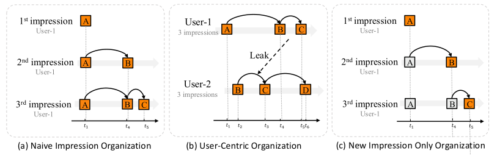
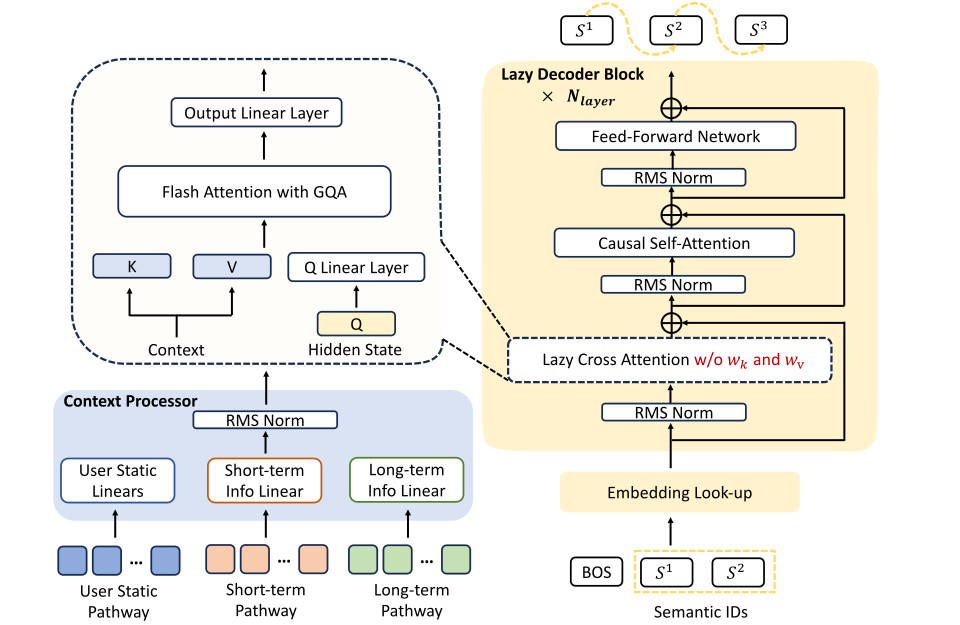
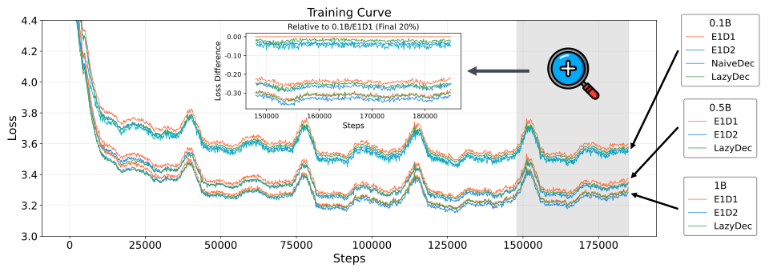
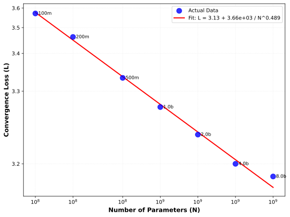
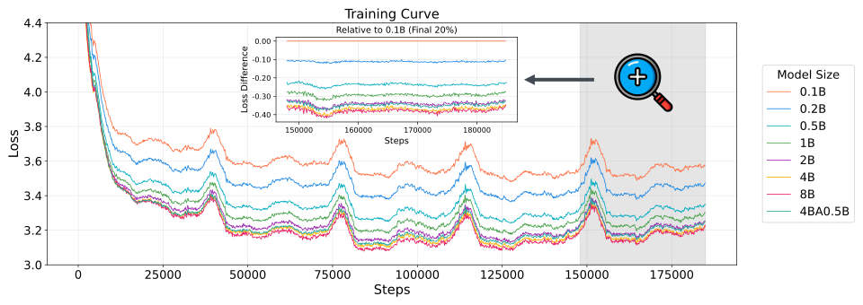
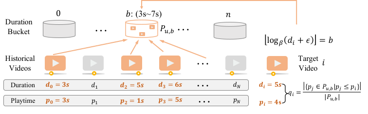
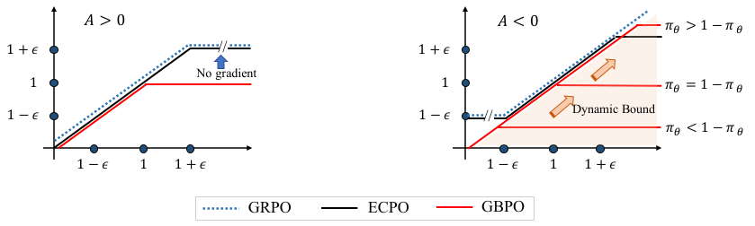
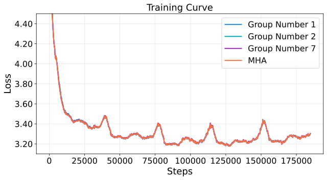
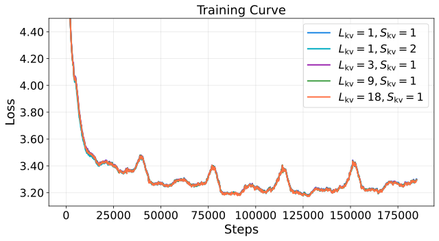
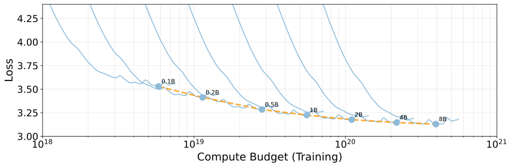

OneRec-V2 技术报告
摘要
生成式 AI 近期的突破通过实现端到端生成，从根本上改变了推荐系统。OneRec 是一个工业规模的生成式推荐框架，它将推荐重新表述为自回归生成任务，从而能够直接优化最终目标，并实现较高的模型 FLOPs 利用率（MFU）。 尽管 OneRec-V1 在真实世界部署中已展现出显著的经验性成功，但有两个关键挑战阻碍了其可扩展性和性能：(1) 编码器-解码器架构中的低效计算分配，其中 97.66% 的资源被用于序列编码上下文编码而非生成，这限制了模型的可扩展性；(2) 仅依赖奖励模型的强化学习中的局限性，包括采样效率低下以及由于代理奖励信号而可能出现的奖励黑客问题。为应对这些挑战，我们提出了 OneRec-V2，其特点包括：
1. 惰性仅解码器架构：一种精简的仅解码器设计，消除了编码器瓶颈并简化了交叉注意力，使总计算量减少 94%，训练资源减少 90%（见图 1 右侧）。 这种效率使模型能够成功扩展至 8B 参数，并且值得注意的是，收敛损失密切遵循经验缩放定律。随着模型规模扩大，我们观察到损失的平滑且可预测的下降，与缩放定律拟合结果一致（见图 1 左侧和图 6）。
2. 基于真实世界用户交互的偏好对齐：一个由用户反馈驱动的框架，包含 (i) 时长感知奖励塑形以缓解视频时长偏差，以及 (ii) 自适应比率裁剪以稳定策略优化，有效利用真实世界反馈以更好地对齐用户偏好，并显著提升了 App 停留时长。
在快手/快手极速版上进行的大量 A/B 测试证明了 OneRec-V2 的有效性，将 App 停留时长提升了 0.467%/0.741%，同时在没有跷跷板效应的情况下平衡了多目标推荐。这项工作推进了生成式推荐的可扩展性和与真实世界反馈的对齐，代表了端到端推荐系统发展向前迈出的一步。
1 引言
生成式 AI 已在众多领域引发了范式转变 (Achiam et al., 2023; Guo et al., 2025; Yang et al., 2025a)。尽管传统的级联推荐架构经历了持续演进，但仍受限于根本性瓶颈：固有的多阶段设计导致计算资源碎片化和优化目标错位。生成式推荐通过将推荐重新表述为端到端序列生成问题，改变了这一范式 (Cui et al., 2022; Feng et al., 2022; Rajput et al., 2023; Zhai et al., 2024; Han et al., 2025; Zhou et al., 2025; Chen et al., 2024; Kong et al., 2025; Yang et al., 2025b; Badrinath et al., 2025)。这种统一方法能够直接优化最终目标，实现较高的模型 FLOPs 利用率（MFU），并促进推荐系统与大型基础模型社区之间更紧密的融合。
尽管 OneRec-V1 (Zhou et al., 2025) 在工业部署中已展现出相当大的成功，但仍有机会进一步释放其可扩展性和性能：
(1) 编码器-解码器架构中的低效计算分配。OneRec-V1 采用编码器-解码器框架，其中用户历史交互序列由编码器处理，然后通过交叉注意力被解码器利用。尽管 OneRec-V1 的解码器包含比编码器更多的参数，但计算负载主要集中于编码器，因为它处理大量用户交互序列，而解码器的输入则显著更短。如第 2.1 节所示，在 OneRec-V1 中上下文长度为 时，上下文编码消耗了总 FLOPs 的 97.66%，而解码器的目标物品生成仅为 2.34%。这种不成比例的分配带来了可扩展性挑战，因为大部分计算预算被用于序列编码，而非形成推荐决策的关键生成过程。在同等计算预算下，这种不均衡的资源分配可能限制模型有效扩展到更大架构的潜力。
(2) 仅依赖奖励模型的强化学习中的局限性。 尽管 OneRec-V1 已证明了基于奖励模型的强化学习在策略优化中的有效性，但该方法面临两个固有挑战。首先，存在 采样效率有限的问题，因为依赖奖励模型的方法需要额外的计算资源用于在线生成和打分。这限制了采样只能针对一小部分用户，以近似全局行为。其次，存在 潜在的奖励黑客问题，即策略学会利用奖励模型中的特定模式或偏差，而这些并不能转化为实际改进。整合真实用户反馈以解决这些固有问题，可以使策略更好地与用户偏好对齐并带来更好的结果。此外，OneRec 的大规模部署为在持续反馈循环中通过策略优化进行自我改进提供了关键机会。
在这项工作中，我们介绍了 OneRec-V2，它通过惰性解码器架构和基于真实世界用户交互的偏好对齐来解决这些根本性局限。如图 2 所示，我们的主要贡献是：
-
1.
惰性仅解码器架构。我们提出了一种精简的仅解码器架构，消除了传统编码器-解码器设计的计算瓶颈。通过移除编码器组件并简化交叉注意力机制（消除 K/V 投影层），我们的惰性解码器实现了计算需求降低 94% 和实际训练资源降低 90%，同时在同等计算预算下支持 16 更大的模型参数（从 0.5B 到 8B）。如图 1 所示，这种架构不仅使仅解码器 Transformer 对工业规模推荐系统而言变得实用且高效，而且展现出强大的缩放能力：在广泛的模型规模范围内，收敛损失密切遵循 Hoffmann 等人（2022）(Hoffmann et al., 2022) 提出的理论缩放定律。这为大型生成式推荐模型的未来发展提供了经验和理论指导。
-
2.
基于真实世界用户交互的偏好对齐。我们引入了一个全面的后训练框架，直接利用真实世界用户反馈信号来解决生成式推荐系统中奖励建模的根本挑战。(i) 时长感知奖励塑形，它通过考虑视频长度变化来缓解原始观看时长信号中的固有偏差，确保奖励信号准确反映内容质量而非仅仅是时长；以及 (ii) 自适应比率裁剪，它在策略优化过程中有效降低训练方差，同时保持收敛保证。我们的实验展示出 APP 停留时长的显著提升。值得注意的是，当引入 OneRec 自身推荐中的流量分布模式时，我们观察到在线性能被放大，这表明模型优化与真实世界用户行为分布之间的对齐得到改善。
在拥有 400 百万日活跃用户的快手/快手极速版 APP 上进行的大量在线 A/B 测试表明，与 OneRec-V1 相比，OneRec-V2 取得了显著改进，在 App 停留时长上分别提升了 0.467% 和 0.741%，同时有效平衡了多个推荐目标而没有跷跷板效应。
在本文的其余部分，我们首先详细阐述 OneRec-V2 架构和预训练的经验结果（第 2 节）。接下来，我们介绍后训练方法（第 3 节），随后通过在线 A/B 测试进行全面评估（第 4 节）。最后，我们总结这项工作，讨论现有局限性并提出未来研究的潜在方向（第 5 节）。
.
2 惰性仅解码器架构
在本节中，我们介绍基于惰性解码器的架构。 第 2.1 节详细阐述了 OneRec 模型架构的演进路径和思路。 第 2.2 节介绍了我们为 OneRec-V2 设计的惰性仅解码器架构，它在实现更低生成任务损失的同时显著降低了计算复杂度和内存消耗。 最后，第 2.3 节详细阐述了验证我们惰性仅解码器设计优越性并探索生成式推荐系统缩放定律的全面经验结果。

2.1 设计原则
自回归模型已成为现代自然语言处理中的主导范式，驱动着诸如 GPT (Radford et al., 2019; Brown et al., 2020) 和 LLaMA (Touvron et al., 2023a, b) 等最先进的大型语言模型（LLM）。 它们展现出非凡的可扩展性 (Kaplan et al., 2020; Hoffmann et al., 2022)，其成功源于优雅的简洁性：一个统一的自回归处理序列的架构。 结合大规模预训练能力 (Devlin et al., 2019; Raffel et al., 2020)，基于 Transformer 的自回归模型已成为生成式 AI 应用的事实标准。
为将这些架构适配到推荐系统，第一步是为自回归训练构建 文档。传统上，推荐系统的训练样本按时间顺序的曝光组织。然而，当与标准的下一词元预测目标结合时，会产生冗余，如图 3.a 所示。 避免这种冗余的一种方法是使用以用户为中心的组织方式，其中每个训练样本包含一个用户的完整交互历史，如图 3.b 所示。 然而，这存在时间数据泄漏 (Ji et al., 2023) 和流行度偏差的潜在风险。已有大量研究 (Gharahighehi et al., 2021; Gangwar and Jain, 2021; Zhu et al., 2021; Huang et al., 2022; Klimashevskaia et al., ) 致力于缓解这些问题。
| Context Length N | 512 | 3000 | |||
| Encoder-Decoder (0.5B:0.5B) | |||||
| Total Computation (GFLOPs) | 346 | 1988 | |||
| Context Encoding (GFLOPs) | 338 | 1980 | |||
| Target Decoding (GFLOPs) | 8.1 | 8.1 | |||
| Target Proportion | 2.34% | 0.41% | |||
| Naive Decoder-Only (1B) | |||||
| Total Computation (GFLOPs) | 632 | 3618 | |||
| Context Encoding (GFLOPs) | 614 | 3600 | |||
| Target Decoding (GFLOPs) | 18 | 18 | |||
| Target Proportion | 2.85% | 0.49% | |||
| Lazy Decoder-Only (1B) | |||||
| Total Computation (GFLOPs) | 18 | 18 | |||
| Target Proportion |
为解决上述问题，我们提出按时间顺序组织数据，但将训练损失 仅应用于最新曝光的物品，如图 3.c 所示，其中灰色物品被排除在下一词元预测之外。由于先前曝光的物品和最新曝光的物品作用方式不同，我们在先前的 OneRec-V1 Zhou et al. (2025) 中选择了编码器-解码器架构。如表 1 所示，我们对计算细节进行了初步分析。计算可分为两个不同的类别：上下文编码和目标解码。
定义 1. 上下文编码
处理并转换用户上下文特征的计算操作，具体包括：(i) 在编码器中执行的上下文变换操作，以及 (ii) 解码器交叉注意力中的上下文投影操作。
定义 2. 目标解码
在解码器中处理并转换目标物品的语义词元的计算操作，具体包括：(i) 捕获语义词元之间依赖关系的自注意力，(ii) 应用非线性变换的前馈网络（FFN），以及 (iii) 交叉注意力中的查询和输出变换。
根据表1，与经典的仅解码器架构相比，编码器-解码器架构在参数量相同的情况下节省了近一半计算量。 然而，两种架构仍然存在计算效率低下的问题：大部分计算被分配给了不直接贡献于损失计算的词元。 对于典型的上下文长度（OneRec-V1），只有不到3%的总FLOPs贡献于损失计算，而随着上下文长度的增长，这一比例变得越来越微不足道。 详细的计算分析见附录B。 为了将计算完全集中在目标物品的语义词元上，从而能够高效地扩展到更大的模型，我们提出了惰性仅解码器架构。

2.2 整体架构
在本节中，我们介绍我们的新颖架构，如图4所示，它通过两项关键创新从根本上重新构想了生成式推荐器的设计。
首先，我们提出了一种惰性仅解码器架构，它既不同于传统的编码器-解码器模型，也不同于朴素的仅解码器方法。 我们的设计将上下文视为仅通过交叉注意力访问的静态条件信息，消除了冗余计算，同时保留了模型捕捉复杂用户-物品交互的能力。
其次，我们引入了一种极其高效的无键值投影的惰性交叉注意力机制。 结合分组查询注意力（GQA）(Ainslie et al., 2023)，该设计大幅降低了内存占用，使得能够高效处理大量的用户历史。
2.2.1 上下文处理器
为了有效整合异构和多模态的用户行为信号，我们设计了一个统一的模块，称为上下文处理器，使其能够与下游基于注意力的解码器块无缝集成。
具体而言，异构输入（如用户画像和行为）被拼接为一个统一序列，即上下文。 上下文中的每个物品都被处理为相同维度：
| (1) |
其中表示注意力头维度，表示键值头组数，表示键值拆分系数，表示键值层数。
上下文表示被转换为用于注意力机制的层特定键值对。 我们沿特征维度划分上下文张量，以生成组键值对：
| (2) |
其中。为简单起见，此处忽略序列维度。
对于每一层，我们计算归一化的键值对：
| (3) |
| (4) |
上下文处理器的最终输出为。
2.2.2 惰性解码器块
分词器
对于每个目标物品，我们采用语义分词器生成3个语义ID，如Onerec-V1Zhou et al. (2025)中那样捕捉物品的多方面特征。 在训练过程中，我们使用前2个ID，并在前面添加一个序列起始（BOS）词元以构成输入序列。 这些词元索引随后通过嵌入表映射以获得初始隐藏表示：
| (5) |
块结构
惰性解码器由个堆叠的transformer块组成，每个块包含三个主要组件：交叉注意力、自注意力和前馈模块。对于第层，变换定义为：
| (6) | ||||
| (7) | ||||
| (8) |
其中RMSNorm表示用于训练稳定性的均方根层归一化。
为了在保持计算效率的同时增强模型容量，我们采用混合架构，将深层中的稠密前馈网络替换为混合专家（MoE）模块。 遵循DeepSeek-V3(Liu et al., 2024)，我们采用无辅助损失的负载均衡策略，确保高效的专家利用。
惰性交叉注意力：键值共享
为了提升参数和计算效率，多个惰性解码器块共享由上下文处理器导出的同一组键值对。对于当前层，我们确定对应的键值索引：
| (9) |
其中是惰性解码器块的总数。 该设计确保相邻的块共享相同的上下文表示，其中。
我们通过采用统一的键值表示进一步提升参数效率，即对所有层令，这利用了绑定键值投影能够在减少模型内存占用的同时保持相当性能这一观察。
惰性交叉注意力：分组查询注意力
查询投影保持个注意力头，而键值对仅使用个头组，通常。该设计显著降低了上下文表示的内存占用以及注意力计算期间的内存访问需求，使得能够高效扩展到更长的上下文和更大的批大小。
输出层
来自最后一个解码器块的最终隐藏表示经过位置特定的RMSNorm和线性层以生成对每个语义ID的预测。 在训练过程中，我们优化模型以最大化目标物品语义ID的似然。
2.3 实证结果
为了验证惰性仅解码器架构的有效性，我们在多个维度上进行了全面的实证评估。 我们系统地将我们的方法与经典架构进行比较，研究关键架构创新的影响，并探索稠密和稀疏模型变体的缩放特性。 所有实验均使用快手在8月10日至14日期间（2025年）的曝光数据进行流式训练，采用相同的采样比例和一致的全局批大小。 除非另有说明，我们设置、、、和。 对于在线部署，我们采用1B参数模型，并将长期用户行为序列长度扩展到。
2.3.1 架构比较
| Architecture | Total Parameters11 1 Approximate 0.1B,0.5B and 1B, according to specific model configurations. | GFLOPs | Activations | Convergence Loss |
| Enc:Dec=1:1 | 0.1B | 25.64 | 4.21B | 3.59 |
| Enc:Dec=1:2 | 0.1B | 17.72 | 2.92B | 3.55 |
| Naive Dec-Only | 0.1B | 63.78 | 7.52B | 3.54 |
| Lazy Dec-Only | 0.1B | 1.98 | 0.31B | 3.57 |
| Enc:Dec=1:1 | 0.5B | 142.73 | 10.79B | 3.35 |
| Enc:Dec=1:2 | 0.5B | 104.73 | 7.94B | 3.32 |
| Naive Dec-Only | 0.5B | 317.68 | 19.28B | * |
| Lazy Dec-Only | 0.5B | 9.55 | 0.77B | 3.33 |
| Enc:Dec=1:1 | 1B | 296.36 | 17.63B | 3.28 |
| Enc:Dec=1:2 | 1B | 204.21 | 12.20B | 3.26 |
| Naive Dec-Only | 1B | 634.83 | 31.53B | * |
| Lazy Dec-Only | 1B | 18.89 | 1.24B | 3.27 |
注：本表中的FLOPs和激活数量基于特定模型配置计算，相比表1中给出的近似估计更为精确。

我们比较了生成式推荐的三种架构范式：编码器-解码器架构（OneRec-V1）、朴素仅解码器架构，以及我们提出的惰性仅解码器架构。 对于每个模型，我们评估三个语义词元上的平均生成损失：
| (10) |
其中表示目标物品的第个语义ID，BOS表示句子起始词元，context是上下文处理器的输出，包含用户静态特征和行为特征。 该损失与OneRec-V1不同，因为我们使用三个词元的平均值，而V1使用它们的和。
2.3.2 键值共享
我们的上下文处理器引入了两个关键参数，可灵活控制整体上下文维度：和。 参数决定了跨层的不同上下文表示的数量，每个连续解码器块共享相同的键值对。 参数进一步控制键和值是否共享相同的表示（）还是保持单独的投影（）。 该设计降低了计算成本和激活内存，同时在生成任务上保持相当的性能。 我们在一个具有的1B参数稠密惰性解码器模型上进行消融研究，以考察这些设计选择的影响。
| GFLOPs | Activations | Convergence Loss | ||
| 1 | 1 | 18.89 | 1.24B | 3.27 |
| 1 | 2 | 19.19 | 1.33B | 3.27 |
| 3 | 1 | 19.49 | 1.42B | 3.27 |
| 9 | 1 | 21.27 | 1.99B | 3.27 |
| 18 | 1 | 23.95 | 2.83B | 3.27 |
图11(a)表明，激进的键值共享在整个训练过程中保持了有竞争力的损失，验证了我们高效的上下文处理策略。
2.3.3 分组查询注意力
| GFLOPs | Activations | KV Size | Convergence Loss | |
| 14 | 18.89 | 1.24B | 94M | 3.27 |
| 7 | 18.74 | 1.19B | 47M | 3.28 |
| 2 | 18.64 | 1.16B | 13M | 3.28 |
| 1 | 18.62 | 1.15B | 7M | 3.27 |
分组查询注意力（GQA）在多个查询头之间共享键值头。 在我们的惰性解码器架构中，这一优化减少了激活内存以及交叉注意力操作中的内存访问瓶颈，从而在最小化对模型质量影响的同时提升训练吞吐量。 我们研究键值头组数变化的影响，采用的模型为1B参数的稠密惰性解码器，具有个注意力头。
2.3.4 模型缩放
我们在惰性仅解码器架构上进行了全面的缩放实验，研究了稠密和稀疏两种配置，以理解不同模型规模下的计算-性能权衡。
稠密模型缩放。
我们探索了从0.1B到8B参数的稠密惰性解码器模型的缩放特性。表5展示了每种模型配置的架构超参数和收敛性能。
| Model | Parameters | d_model | n_layers | n_heads | embed_dim | Learning Rate | Convergence Loss |
| Dense | 0.1B | 640 | 12 | 10 | 32 | 5.00e-4 | 3.57 |
| 0.2B | 896 | 12 | 14 | 45 | 3.54e-4 | 3.46 | |
| 0.5B | 1408 | 14 | 11 | 70 | 2.24e-4 | 3.33 | |
| 1B | 1792 | 18 | 14 | 90 | 1.58e-4 | 3.27 | |
| 2B | 2304 | 22 | 18 | 115 | 1.12e-4 | 3.23 | |
| 4B | 2944 | 26 | 23 | 147 | 7.91e-5 | 3.20 | |
| 8B | 3584 | 34 | 28 | 179 | 5.59e-5 | 3.19 | |
| MoE | 4B (0.5B active) | 1408 | 14 | 11 | 70 | 2.24e-4 | 3.22 |

稀疏混合专家。
为了实现更高效的缩放，我们研究了一种混合专家（MoE）变体，它将稠密前馈网络替换为稀疏专家路由。我们的MoE配置使用53个路由专家和1个共享专家，总参数量为4B（每个词元0.5B激活）。该模型对每个词元使用top-3专家路由，MoE中间层大小为1408。 该稀疏模型保持与0.5B稠密模型相同的基础架构，同时将前2个惰性解码器块之后的前馈层替换为MoE层。

结果与分析。
我们的实证结果与理论缩放定律显示出合理的一致性。 虽然通用的Chinchilla缩放定律表达式为
其中是模型参数量，是训练词元数量Hoffmann et al. (2022)，我们的实验设置保持固定。在这种情况下，项是一个常数，可以被吸收到截距中。因此，对于固定的数据，缩放定律简化为
其中。我们的实证结果与该函数形式拟合得非常好：、、，如图6所示。
总参数量为4B（激活0.5B）的MoE变体达到了3.22的收敛损失，优于2B稠密模型，同时保持与0.5B稠密基线相当的计算需求。该配置实现了0.11的损失降低，比较基线为0.5B稠密模型，展示了稀疏架构在推荐任务上的有效性。
这些结果表明我们的惰性解码器架构能够有效扩展，其中MoE变体为工业级推荐系统的部署提供了特别有吸引力的权衡，因为在工业级推荐系统中，计算效率直接影响服务成本和延迟。
3 基于真实世界用户交互的偏好对齐
在本节中，我们介绍OneRec-V2的后训练阶段。监督微调阶段与OneRec-V1相同，使用流式曝光数据进行在线损失训练，与预训练期间使用的损失一致。其主要目的是捕捉用户的实时兴趣变化，同时防止模型偏离预训练模型过远。在OneRec-V1中，强化学习阶段仅基于奖励模型。在OneRec-V2中，我们引入了以用户反馈信号作为奖励的强化学习。
3.1 基于用户反馈信号的强化学习
基于用户反馈定义奖励可以避免奖励黑客问题，并且不需要额外的模型计算开销。然而，它仍然面临如何组合多个目标以及正标签稀疏性等挑战。在短视频推荐场景中，每个视频的播放时间是最密集的反馈信号，并且与最重要的在线指标密切相关，例如APP停留时长和LT7（7天生命周期）。因此，我们设计了一个简单但有效的基于播放时间的奖励。
3.1.1 时长感知奖励塑造

虽然视频播放时间是衡量用户满意度的有用指标，但它本质上会受到视频时长的偏差影响。为了解决这一偏差，我们提出了一种时长感知奖励塑造机制，如图8所示。该方法通过将播放时间与每个用户历史上时长相近的视频进行比较来进行归一化。由于视频时长遵循长尾分布，我们采用对数策略将历史视频划分为桶。这种方法将时长分组为指数级扩宽的区间，从而得到更均衡、更有意义的同类组。该映射由函数给出，它将时长为的视频分配到一个离散的桶索引。形式上，分桶函数定义为：
其中是控制桶粒度的可配置对数底数，是一个小常数（例如），用于在处理极短时长时保持数值稳定性。
设表示用户的历史交互序列，其中是视频时长，是观测到的播放时间。对于每个时长桶，我们将播放时间的经验分布定义为
给定目标视频，其时长为、播放时间为，我们首先确定其所属的桶。然后，时长归一化的互动分数计算为在用户历史分布中的经验百分位排名：
我们根据该分数选择最有价值的样本作为正样本。在一个批次中，我们计算，将其取为25%分位数（上四分位数），计算对象是按降序排序后的。对于具有显式负反馈（如“不喜欢”操作（））的样本，我们设。所有其他样本被过滤掉，这等价于设置。注意，我们直接分配优势值而不进行归一化，因为我们对正负样本的定义足够严格。进一步的归一化可能会引入优化中的不一致性，从而降低性能。形式上，定义如下：
该策略有效地筛选出高质量的正样本，同时纳入直接的负信号，从而产生更准确的用户偏好信号。
3.1.2 强化学习
梯度有界策略优化
强化学习的有效性和稳定性近来一直是LLM社区的主要研究焦点。一个关键挑战是在保持梯度稳定的同时增强探索以提升性能。在本节中，我们介绍新提出的强化学习方法GBPO（梯度有界策略优化）。
| (11) |
| (12) |
从公式中可以看出，GBPO移除了对比率的裁剪操作，并对引入了动态边界。总体而言，GBPO有两个主要优势：
-
•
全样本利用：保留所有样本的梯度，鼓励模型进行更多样化的探索。
-
•
有界梯度稳定：用BCE（二元交叉熵）损失的梯度来界定RL的梯度，增强RL训练的稳定性。
现有的基于裁剪的工作
在详细介绍GBPO之前，我们首先简要回顾现有的LLM强化学习方法。GRPO/PPO(Shao et al., 2024; Schulman et al., 2017)通过裁剪操作丢弃策略比率过大或过小的样本，防止训练过于激进。DAPO(Yu et al., 2025)通过clip higher放宽样本限制，特别是纳入更多低概率或高熵词元，从而在提高强化学习性能的同时增加多样性。这些研究表明，放宽裁剪约束以包含更多样本可以鼓励更多样化的探索并提升性能。
然而，这些方法没有对梯度稳定性提供完整且全面的考虑。特别是对于负样本，策略比率缺乏上界容易导致梯度爆炸，造成模型性能崩溃。Dual-clip(Ye et al., 2020)对负样本的策略比率施加上界截断。虽然这提高了稳定性，但它丢弃了太多负样本，从而减慢了收敛速度。ECPO(Zhou et al., 2025)通过直接对而非比率进行裁剪来缓解负样本上的梯度爆炸。该策略保留了更大比例的训练样本，同时提高了优化稳定性。同样，CISPO(Chen et al., 2025)和GPPO(Su et al., 2025)采用相关技术将比率保持在合理范围内，同时保留更多样本的梯度信号。在OneRec V1中，我们采用ECPO（Early Clipped GRPO），形式化定义为：
| (13) |
| (14) |
梯度分析
曝光样本既包括由OneRec生成的样本，也包括来自传统流水线的样本。对于由OneRec生成的曝光样本，我们使用曝光时的生成概率作为。对于来自传统流水线的样本，由于流水线的复杂性，我们无法获得其概率；因此，我们将简化为OneRec模型当前的生成概率，即。对于这些样本，策略比率始终为。在传统RL方法中，比率为的样本被视为训练稳定的样本，不进行截断。然而在现实中，此类样本仍然可能导致梯度爆炸，这是由负样本引起的，如图9所示。
从梯度的角度来看，对于这些样本的特定词元，我们有
| (15) |
| (16) |
这表明当前词元概率越小，梯度越大。对于正样本，较小的概率意味着有更大的提升空间，因此具有较大的梯度是合理的。然而对于负样本，较小的概率意味着抑制空间更小；如果梯度过大，容易导致模型过拟合甚至崩溃。这一现象表明传统裁剪方法无法完全解决RL梯度不稳定的问题，因为当比率为时它们无法避免梯度爆炸。在BCE损失中，同样存在对负样本的惩罚，但其梯度相比RL损失要稳定得多。

3.1.3 实验
实验设置
在本节中，我们通过实验验证所定义的用户反馈信号的有效性。为快速验证，本节所有实验均在0.5b模型、上下文长度为512的设置下进行。基线为OneRec-V1。在OneRec-V1的实验设置中，分配给实验组的在线流量仅占总量的极小部分，因此训练样本几乎全部来自传统推荐流水线。在LLM领域，已有研究表明在自生成样本上训练可以实现自我提升(He et al., 2025)。如今OneRec承载了25%的总流量，我们有足够的数据在我们的设置中验证这一假设。据此，我们设计了两个实验组进行比较：
结果分析
从表6中，我们得到以下观察。当仅使用来自传统流水线的样本时，即与OneRec-V1相同的样本来源，引入基于用户反馈的强化学习显著提升了与时长相关的指标（如App停留时长和观看时长），但替代了视频播放量等其他指标。这表明我们的时长感知奖励确实与App停留时长强相关。在纳入来自OneRec流水线的样本后，几乎所有指标都显著提升，特别是视频播放量由负转正。这证明基于用户反馈的强化学习能够实现自迭代优化，充分利用用户反馈信号来提升用户体验。
| Scenarios | Online Metrics | w/o OneRec Samples | w/ OneRec Samples |
| Kuaishou | App Stay Time | +0.165% | +0.227% |
| Watch Time | +1.054% | +0.648% | |
| Video View | -0.901% | +0.716% | |
| Like | -0.186% | +2.897% | |
| Follow | +2.274% | +3.661% | |
| Comment | -4.982% | +6.392% | |
| Collect | -0.817% | +1.232% | |
| Forward | -2.162% | +3.426% | |
| Kuaishou Lite | App Stay Time | +0.159% | +0.353% |
| Watch Time | +0.396% | +0.104% | |
| Video View | -2.231% | +0.575% | |
| Like | -0.534% | +4.956% | |
| Follow | +1.809% | +4.800% | |
| Comment | -4.860% | +5.067% | |
| Collect | -0.377% | +2.701% | |
| Forward | +0.775% | +5.783% |
3.2 用户反馈信号与奖励模型的对比
3.2.1 奖励模型的局限性
在本节中，我们比较 OneRec-V1 中依赖奖励模型的强化学习与由用户反馈信号驱动的强化学习。尽管 OneRec-V1 通过大量实验展示了强化学习的有效性，但其性能受到有限采样概率的制约。由于资源限制，同策略 rollout 只能针对一小部分用户进行（1%）。此外，奖励模型容易受到奖励破解的影响。用户反馈信号直接反映真实用户偏好，从而缓解奖励破解风险。然而，在 OneRec 全面部署之前，尚无法获得针对生成样本的大规模真实用户反馈。随着 OneRec 的全面部署，现在可以更有效地利用这些信号进行精确的自我迭代优化。在上一节中，我们展示了所提出的时长感知反馈信号的有效性。现在，我们比较用户反馈与奖励模型的性能。
| Scenarios | Online Metrics | Reward Model | User Feedback Signals | Hybrid |
| Kuaishou | App Stay Time | +0.269% | +0.299% | +0.283% |
| Watch Time | +0.537% | +0.610% | +0.118% | |
| Video View | +0.505% | +0.647% | +0.647% | |
| Like | +6.552% | +2.435% | +7.010% | |
| Follow | +7.265% | +2.007% | +8.458% | |
| Comment | +15.472% | +0.944% | +8.763% | |
| Collect | +1.856% | +1.401% | +9.739% | |
| Forward | +12.024% | +0.803% | +5.270% | |
| Kuaishou Lite | App Stay Time | +0.163% | +0.213% | +0.207% |
| Watch Time | +0.503% | +0.172% | -0.398% | |
| Video View | +0.457% | +0.056% | +0.083% | |
| Like | +7.798% | +4.008% | +6.267% | |
| Follow | +12.242% | +4.421% | +11.705% | |
| Comment | +11.284% | +3.958% | +7.002% | |
| Collect | +4.468% | +1.731% | +3.495% | |
| Forward | +15.919% | +7.704% | +6.670% |
3.2.2 实验
实验设置
我们设置了三组实验进行比较，分别称为奖励模型、用户反馈信号和混合。模型设置与第3.1.3节相同。评估指标与之前的实验相同，包括基于时长的指标和基于交互的指标。App 停留时长是最重要的指标，而其他指标则作为用户体验的参考值。表7所示的结果表示各组相对于 OneRec-V1 的相对性能。
-
•
奖励模型：引入基于奖励模型的强化学习，与 OneRec-V1 的主要区别在于预训练生成模型的架构。OneRec-V1 使用 Encoder-Decoder 架构，而 OneRec-V2 采用所提出的 Lazy Decoder。
-
•
用户反馈信号：引入基于用户反馈的强化学习并纳入自生成样本，与上一节中的“w/ OneRec Samples”设置相同。
-
•
混合：同时引入奖励模型和用户反馈信号，两类样本相互独立：前者是通过模型自身 rollout 采样获得的样本，后者是先前已曝光给用户的样本。
| Scenarios | Online Metrics | OneRec-V2 |
| Kuaishou | App Stay Time | +0.467% |
| LT7 | +0.069% | |
| Watch Time | +1.367% | |
| Video View | +0.331% | |
| Like | +3.924% | |
| Follow | +4.730% | |
| Comment | +5.394% | |
| Collect | +2.112% | |
| Forward | +3.183% | |
| Kuaishou Lite | App Stay Time | +0.741% |
| LT7 | +0.034% | |
| Watch Time | +0.762% | |
| Video View | +0.259% | |
| Like | +5.393% | |
| Follow | +5.627% | |
| Comment | +5.013% | |
| Collect | +3.202% | |
| Forward | +7.958% |
结果分析
从表7中，我们可以总结出以下观察结果。
-
•
在奖励模型设置下，OneRec-V2 的表现显著优于 OneRec-V1，进一步证实了 Lazy Decoder 架构带来的优势。
-
•
无论是基于奖励模型还是用户反馈，强化学习都能在时长和交互指标上带来双重收益。然而，奖励模型倾向于提升交互指标，而真实用户反馈倾向于增加 App 停留时长。这是因为奖励模型输出的奖励是多个推荐目标的融合，而我们基于用户反馈定义的奖励主要根据视频播放时长计算。这也表明不同的奖励定义导致不同的模型偏好，这与 OneRec-V1 中的结论一致。
-
•
当结合两者（混合）时，尽管在时长和交互方面的具体收益不如各自单独策略高，但性能损失极小，并且 App 停留时长与交互指标之间的平衡得到改善。这是因为两种单独策略带来的收益部分重叠。尽管将它们结合无法实现完美的叠加效果，但可以使它们互补。这也凸显了多样化奖励信号的重要性。我们将在未来对奖励信号的多样性和准确性进行进一步研究。
4 在线 A/B 测试
我们在快手的两大短视频场景中部署了 OneRec-V2：快手主 feed 和快手极速版 feed，这两个场景代表了平台流量最高的环境，服务400百万日活跃用户。评估使用5%流量实验组进行，观察期为一周。所用模型为 10 亿参数版本，上下文长度为3000，beam size 为512。在线推理方面，系统使用 L20 GPU，实现了36ms 的延迟和62%的 MFU（模型 FLOPs 利用率）。为降低系统复杂度，该版本仅纳入用户反馈信号。我们的主要评估指标是 App 停留时长（衡量用户总参与时长）和 LT7（7日用户生命周期留存）。如表8所示，OneRec-V2 在两个平台上均取得了显著提升。此外，OneRec-V2 在所有用户交互指标上均表现出显著增益，包括点赞、关注、评论及其他参与行为，展示了其引导多任务推荐系统走向更均衡状态的能力，同时有效缓解了竞争目标之间的跷跷板效应。
为进一步验证我们的发现，我们在禁用缓存的情况下进行了一项额外实验，其中另一个1%实验组的所有流量都请求 OneRec-V2（详细结果见附录D）。这一全面评估证实了用户参与度指标的大幅提升，点赞、关注、评论和转发等交互指标在各平台上显示出9.6%至29.2%的显著增益。尽管这些结果展示了 OneRec-V2 在驱动用户参与方面的强劲表现，但也揭示了重要的生态系统层面的考量，包括冷启动视频观看量显著下降（快手和快手极速版分别为44.7%和36.7%）以及集群密度增加。
5 结论、局限性与未来方向
在本文中，我们在 OneRec-V1 的基础上提出了 OneRec-V2。我们深入探讨了其扩展性和奖励系统的设计。在扩展性方面，我们发现尽管 OneRec-V1 模型利用 MoE 在解码器中分配了大量参数，但由于序列长度差异，上下文编码过程消耗了大部分计算资源，阻碍了进一步的扩展和性能提升。因此，我们重新思考了模型架构，提出了 lazy decoder-only 架构，将计算转移到解码阶段，从而允许进一步的模型扩展（目前已扩展至 80 亿参数）。此外，我们开发了一种有效利用真实用户反馈来对齐用户偏好的方法。与仅依赖奖励模型进行对齐的 V1 不同，我们纳入了真实用户反馈信号，并通过创新设计在短期视频观看时长与长期满意度之间建立了关联。此外，使用 GBPO，我们实现了高度稳定的训练。严格的 A/B 实验证明了该框架的有效性。然而，我们的系统仍有改进空间。例如：
- 1.
-
2.
奖励系统：我们新近将真实用户反馈纳入奖励系统，这已被证明是有效的。然而，我们当前的方案建立了连接短期和长期回报的规则，而非让模型直接优化其长期价值。我们将朝这个方向进行优化，使模型能够朝着长期价值实现自我强化。
除了在快手平台视频推荐中实现盈利外，OneRec-V2 还已部署在多种业务场景中，产生了可观的回报，例如(Wei et al., 2025)。我们相信，通过更多研究者和工程师的迭代、验证和优化，该系统可以进一步完善。
参考文献
- Gpt-4 technical report. arXiv preprint arXiv:2303.08774. Cited by: §1.
- Gqa: training generalized multi-query transformer models from multi-head checkpoints. arXiv preprint arXiv:2305.13245. Cited by: §2.2.
- PinRec: outcome-conditioned, multi-token generative retrieval for industry-scale recommendation systems. arXiv preprint arXiv:2504.10507. Cited by: §1.
- Language models are few-shot learners. Advances in neural information processing systems 33, pp. 1877–1901. Cited by: §2.1.
- MiniMax-m1: scaling test-time compute efficiently with lightning attention. arXiv preprint arXiv:2506.13585. Cited by: §3.1.2.
- HLLM: enhancing sequential recommendations via hierarchical large language models for item and user modeling. arXiv preprint arXiv:2409.12740. Cited by: §1.
- M6-rec: generative pretrained language models are open-ended recommender systems. arXiv preprint arXiv:2205.08084. Cited by: §1.
- Bert: pre-training of deep bidirectional transformers for language understanding. In Proceedings of the 2019 conference of the North American chapter of the association for computational linguistics: human language technologies, volume 1 (long and short papers), pp. 4171–4186. Cited by: §2.1.
- Recommender forest for efficient retrieval. Advances in Neural Information Processing Systems 35, pp. 38912–38924. Cited by: §1.
- An adaptive boosting technique to mitigate popularity bias in recommender system. arXiv preprint arXiv:2109.05677. Cited by: §2.1.
- Fair multi-stakeholder news recommender system with hypergraph ranking. Information Processing & Management 58 (5), pp. 102663. Cited by: §2.1.
- Deepseek-r1: incentivizing reasoning capability in llms via reinforcement learning. arXiv preprint arXiv:2501.12948. Cited by: §1.
- MTGR: industrial-scale generative recommendation framework in meituan. arXiv preprint arXiv:2505.18654. Cited by: §1.
- Skywork open reasoner 1 technical report. arXiv preprint arXiv:2505.22312. Cited by: §3.1.3.
- Training compute-optimal large language models. arXiv preprint arXiv:2203.15556. Cited by: item 1, §2.1, §2.3.4, item 1.
- It is different when items are older: debiasing recommendations when selection bias and user preferences are dynamic. In Proceedings of the fifteenth ACM international conference on web search and data mining, pp. 381–389. Cited by: §2.1.
- A critical study on data leakage in recommender system offline evaluation. ACM Transactions on Information Systems 41 (3), pp. 1–27. Cited by: §2.1.
- Scaling laws for neural language models. arXiv preprint arXiv:2001.08361. Cited by: §2.1.
- [19] A survey on popularity bias in recommender systems (2023). CoRR, abs/2308.01118. Cited by: §2.1.
- Generative click-through rate prediction with applications to search advertising. arXiv preprint arXiv:2507.11246. Cited by: §1.
- Deepseek-v3 technical report. arXiv preprint arXiv:2412.19437. Cited by: §2.2.2.
- Language models are unsupervised multitask learners. OpenAI blog 1 (8), pp. 9. Cited by: §2.1.
- Exploring the limits of transfer learning with a unified text-to-text transformer. Journal of machine learning research 21 (140), pp. 1–67. Cited by: §2.1.
- Recommender systems with generative retrieval. Advances in Neural Information Processing Systems 36, pp. 10299–10315. Cited by: §1.
- Proximal policy optimization algorithms. arXiv preprint arXiv:1707.06347. Cited by: §3.1.2.
- Deepseekmath: pushing the limits of mathematical reasoning in open language models. arXiv preprint arXiv:2402.03300. Cited by: §3.1.2.
- Klear-reasoner: advancing reasoning capability via gradient-preserving clipping policy optimization. arXiv preprint arXiv:2508.07629. Cited by: §3.1.2.
- Llama: open and efficient foundation language models. arXiv preprint arXiv:2302.13971. Cited by: §2.1.
- Llama 2: open foundation and fine-tuned chat models. arXiv preprint arXiv:2307.09288. Cited by: §2.1.
- Attention is all you need. Advances in neural information processing systems 30. Cited by: Appendix B.
- OneLoc: geo-aware generative recommender systems for local life service. arXiv preprint arXiv:2508.14646. Cited by: §5.
- Qwen3 technical report. arXiv preprint arXiv:2505.09388. Cited by: §1.
- Sparse meets dense: unified generative recommendations with cascaded sparse-dense representations. arXiv preprint arXiv:2503.02453. Cited by: §1.
- Mastering complex control in moba games with deep reinforcement learning. In Proceedings of the AAAI conference on artificial intelligence, Vol. 34, pp. 6672–6679. Cited by: §3.1.2.
- Dapo: an open-source llm reinforcement learning system at scale. arXiv preprint arXiv:2503.14476. Cited by: §3.1.2.
- Actions speak louder than words: trillion-parameter sequential transducers for generative recommendations. arXiv preprint arXiv:2402.17152. Cited by: §1.
- OneRec technical report. arXiv preprint arXiv:2506.13695. Cited by: §1, §1, §2.1, §2.2.2, §3.1.2.
- Popularity bias in dynamic recommendation. In Proceedings of the 27th ACM SIGKDD conference on knowledge discovery & data mining, pp. 2439–2449. Cited by: §2.1.
附录
Appendix A 贡献
在每个角色内，作者按名字的字母顺序列出。
核心贡献者
Guorui Zhou
Hengrui Hu
Hongtao Cheng
Huanjie Wang
Jiaxin Deng
Jinghao Zhang
Kuo Cai
Lejian Ren
Lu Ren
Liao Yu
Pengfei Zheng
Qiang Luo
Qianqian Wang
Qigen Hu
Rongzhou Zhang
Rui Huang
Ruiming Tang
Shiyao Wang
Shujie Yang
Tao Wu
Wuchao Li
Xinchen Luo
Xingmei Wang
Yi Su
Yunfan Wu
Zexuan Cheng
Zhanyu Liu
Zixing Zhang
贡献者
Bin Zhang
Boxuan Wang
Chaoyi Ma
Chengru Song
Chenhui Wang
Chenglong Chu
Di Wang
Dongxue Meng
Dunju Zang
Fan Yang
Fangyu Zhang
Feng Jiang
Fuxing Zhang
Gang Wang
Guowang Zhang
Han Li
Honghui Bao
Hongyang Cao
Jiaming Huang
Jiapeng Chen
Jiaqiang Liu
Jinghui Jia
Kun Gai
Lantao Hu
Liang Zeng
Qiang Wang
Qidong Zhou
Shengzhe Wang
Shihui He
Shuang Yang
Siyang Mao
Sui Huang
Tiantian He
Tingting Gao
Wei Yuan
Xiao Liang
Xiaoxiao Xu
Xugang Liu
Yan Wang
Yang Zhou
Yi Wang
Yiwu Liu
Yue Song
Yufei Zhang
Yunfeng Zhao
Zhixin Ling
Ziming Li
Appendix B 不同架构的计算复杂度
预备知识。
在实际推荐系统中，多个物品会同时曝光。一项关键优化是公共上下文压缩：当向同一用户曝光个物品推荐时，共享的上下文信息（用户画像、历史行为）只需处理一次，并可在所有目标物品间复用。这将有效上下文长度从减少到每个物品约个词元。在快手中，。
transformer 块(Vaswani et al., 2017)中的主要计算组件包括：（1）前馈网络（FFN），（2）注意力投影（、、、），以及（3）注意力分数计算。它们的计算复杂度为：
| FFN: | (19) | |||
| Attention Projections: | (20) | |||
| Attention Scores: | (21) |
其中是这些模块处理的词元数量，是模型的隐藏维度。值得注意的是，FFN 和注意力投影都可以近似为，其中是相应模块的参数数量。
Encoder-Decoder 架构。
我们分析了编码器和解码器组件均为0.5B 参数的 encoder-decoder 模型的计算需求。在使用压缩上下文长度进行训练时，浮点运算（FLOPs）分解如下：
| Context Transformation (Encoder): | (22) | |||
| Context Projection (Cross-Attention): | (23) | |||
| Context Decoding: | (24) | |||
| Target Decoding: | (25) | |||
| Total Computation: | (26) |
其中因子6考虑了乘加运算（贡献因子2）和前向-后向传播比率（贡献因子3）。交叉注意力机制中的上下文投影矩阵（、）位于解码器内，约占解码器参数的10%（0.05B）。
此处忽略注意力分数的计算。考虑特定模型配置：9个编码器层和9个解码器层，以及。注意力分数计算为，编码器： KFLOPs，解码器： KFLOPs。当时，这些值比 FFN 和注意力投影小几个数量级。
朴素 Decoder-Only 架构。
对于具有 10 亿参数的 decoder-only 模型，使用因果注意力掩码处理个词元：
| Context Decoding: | (27) | |||
| Target Decoding: | (28) | |||
| Total Computation: | (29) |
Appendix C 经验结果
我们进行实验以研究 OneRec-V2 模型的模型规模、计算预算与训练损失之间的关系。 图12展示了不同规模模型的平滑生成训练损失曲线随总计算量（以 FLOPs 计量）的变化。 具体而言，更大的模型需要更多计算资源才能达到相同的损失值，但它们也会收敛到更低的损失点，这与大语言模型领域的观察结果一致。



Appendix D 禁用缓存时的在线性能
如第4节所述，我们的实验组流量为5%，其中 OneRec-V2 应用于该组内25%的降级流量。为进行更严格的比较，我们额外分配了一个禁用缓存的1%实验组（在该组中，所有流量请求均由 OneRec-V2 处理）。性能如表9所示。
当所有流量请求均由 OneRec-V2 处理时，我们观察到关键参与指标（包括观看时长和用户互动指标）均取得显著提升。具体而言，点赞、关注、评论和转发等互动指标在不同平台上均展现出从9.6%到29.2%的显著提升。然而，某些生态层面指标呈现出令人担忧的趋势。值得注意的是，冷启动视频浏览量出现显著下降（快手和快手极速版分别下降44.7%和36.7%），而聚类密度则大幅增加（11.7%和7.9%）。这构成了一个关键挑战，需要在我们的未来方向中审慎考虑。
| Scenarios | Online Metrics | OneRec-V2 |
| Kuaishou | App Stay Time | +0.405% |
| Watch Time | +0.513% | |
| Video View | +0.938% | |
| Like | +15.024% | |
| Follow | +15.755% | |
| Comment | +29.249% | |
| Collect | +9.640% | |
| Forward | +24.741% | |
| Cold-Start Video View | -44.704% | |
| Cluster Density | +11.692% | |
| Kuaishou Lite | App Stay Time | +0.958% |
| Watch Time | +2.456% | |
| Video View | -1.121% | |
| Like | +12.783% | |
| Follow | +21.376% | |
| Comment | +16.975% | |
| Collect | +12.886% | |
| Forward | +30.957% | |
| Cold-Start Video View | -36.730% | |
| Cluster Density | +7.933% |